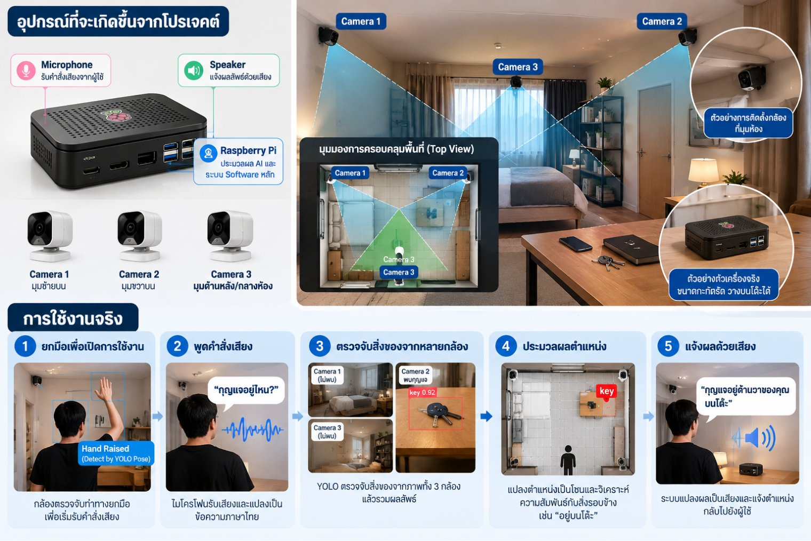

Indoor Object Finder for Visually Impaired
ผู้ช่วยค้นหาสิ่งของภายในบ้านสำหรับผู้พิการทางสายตา
อุปกรณ์ที่ช่วยให้ผู้พิการทางสายตาค้นหาสิ่งของภายในบ้านด้วยการสั่งงานด้วยเสียง
ปัญหา
ผู้พิการทางสายตาสามารถจดจำตำแหน่งสิ่งของภายในบ้านได้ แต่เมื่อวางของผิดที่ มีคนอื่นย้ายของ
ลืมตำแหน่งของสิ่งของ หรือสิ่งของมีขนาดเล็ก การค้นหาอาจใช้เวลานาน และอาจต้องขอความช่วยเหลือจากผู้อื่น
การทำงาน
- ยกมือเพื่อเริ่มใช้งาน กล้องตรวจจับท่าทางยกมือ (YOLO Pose) เพื่อเริ่มรับคำสั่งเสียง
- พูดคำสั่งเสียง เช่น "กุญแจอยู่ไหน?" ไมโครโฟนรับเสียงและแปลงเป็นข้อความภาษาไทย
- ตรวจจับสิ่งของจากหลายกล้อง YOLO ตรวจหาสิ่งของจากภาพกล้องทั้ง 3 ตัวแล้วรวมผลลัพธ์
- ประมวลผลตำแหน่ง แปลงตำแหน่งเป็นโซนและหาความสัมพันธ์กับสิ่งรอบข้าง เช่น "อยู่บนโต๊ะ"
- แจ้งผลด้วยเสียง ลำโพงบอกตำแหน่งกลับไปยังผู้ใช้ เช่น "กุญแจอยู่ด้านขวาของคุณ บนโต๊ะ"

- รายวิชา
- MMI 321 Integrated Medical Product Design and Development
- สถานะ
- กำลังพัฒนา (โปรเจกต์ภาคการศึกษานี้)
- บทบาทของฉัน
- Prototype / Software / Producer
- สมาชิก
- ศิรภัสสร (User Research / Hardware / Data Analyst),
จารุวรรณ (Director / Software / Performance Analyst),
รพีภาส์ (Prototype / Software / Producer)